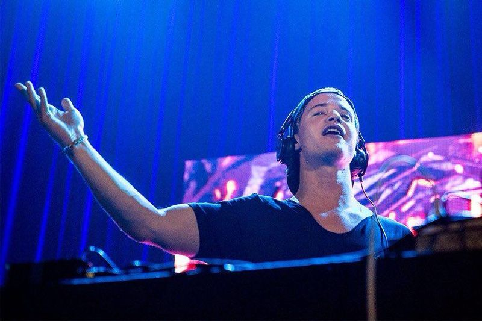

Kyrre Gørvell-Dahll, commonly known by his stage name Kygo,is a Norwegian DJ, songwriter, record producer and musician. He garnered international attention with his remix of the track "I See Fire" by Ed Sheeran, which has received over 33 million plays on SoundCloud and 60 million views on YouTube. His single "Firestone" which has over 240 million views on YouTube with an additional 400 million plays on the music streaming service Spotify, as of May 2016. Kygo has accumulated over 300 million views on his music on SoundCloud and YouTube.
Kygo has since released several singles, such as "ID", "Stole the Show", "Here for You", and "Stay", which have debuted on several international charts. Kygo's debut studio album, Cloud Nine, was released on 13 May 2016.
In February 2015, Kygo's song "ID" was featured in the official trailer for Ultra Music Festival.[17] The same track is also featured on FIFA 16, a popular video game by EA Sports. In August 2015, Kygo was a featured headliner at Lollapalooza in Chicago, one of the biggest music festivals in the world. He made his U.S. television debut on The Late Late Show with James Corden in October 2015. On 21 March 2015, he released his second single, titled "Stole the Show", which as of 11 April 2015, it had already had 1.4 million online streams.[19] On 31 July 2015, he released his third single, "Nothing Left", featuring Will Heard. "Nothing Left" reached number one on the Norwegian Singles Chart. On 4 September 2015, he released his fourth single, titled "Here for You", featuring Ella Henderson, which was revealed to be the vocal version of the song "ID" that was released as part of the Ultra Music Festival.
Three months later, his fifth single, "Stay", produced with fellow Norwegian record producer William Larsen and featuring vocals by Maty Noyes, was released on 4 December 2015. After the release of the single, Kygo announced that he was embarking on a worldwide tour to promote his debut studio album. Soon after, he revealed that his debut studio album was going to be released on 19 February 2016, but was delayed to a later date. He, instead, released a teaser of the songs that he was working on that were on his debut studio album and released it through SoundCloud. In the beginning of March 2016, Kygo officially announced and confirmed his debut studio album was going to be released on 13 May 2016, under the title Cloud Nine. He also announced that he would be releasing three promotional singles, leading up to the release of the album. The first of these singles, which was released 18 March 2016, was entitled "Fragile", which features vocals and was collaborated with Labrinth. The second single came out on 1 April 2016, and was called "Raging", which features vocals from the Irish band Kodaline and was also surprisingly co-written by James Bay. The third and last single was released on 22 April 2016 and was entitled "I'm In Love", featuring vocals from James Vincent McMorrow. Kygo's debut studio album was released on 13 May 2016.[7] Other collaborations were revealed to include Tom Odell, Foxes, RHODES, Matt Corby, Julia Michaels, Angus & Julia Stone and John Legend.
Read more on WikipediaYou can go to: